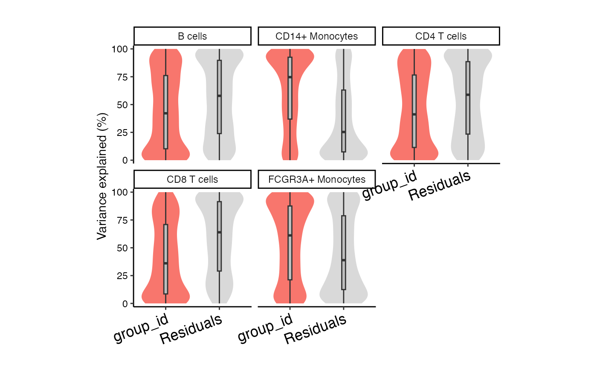

Violin plot of variance fraction for each gene and each variable
# S4 method for DataFrame plotVarPart( obj, col = c(ggColorHue(base::ncol(obj) - 3), "grey85"), label.angle = 20, main = "", ylab = "", convertToPercent = TRUE, ... )
| obj |
|
|---|---|
| col | vector of colors |
| label.angle | angle of labels on x-axis |
| main | title of plot |
| ylab | text on y-axis |
| convertToPercent | multiply fractions by 100 to convert to percent values |
| ... | additional arguments |
Violin plot showing variance fractions
library(muscat) library(SingleCellExperiment) data(example_sce) # create pseudobulk for each sample and cell cluster pb <- aggregateToPseudoBulk(example_sce, assay = "counts", cluster_id = 'cluster_id', sample_id = 'sample_id', verbose=FALSE) # voom-style normalization res.proc = processAssays( pb, ~ group_id)#>#>#>#>#>#>#>#>#>#>#>#>#>#>#>#>#>#>#>#>#># Summarize variance fractions genome-wide for each cell type genes = vp$gene[2:4] plotVarPart(vp)